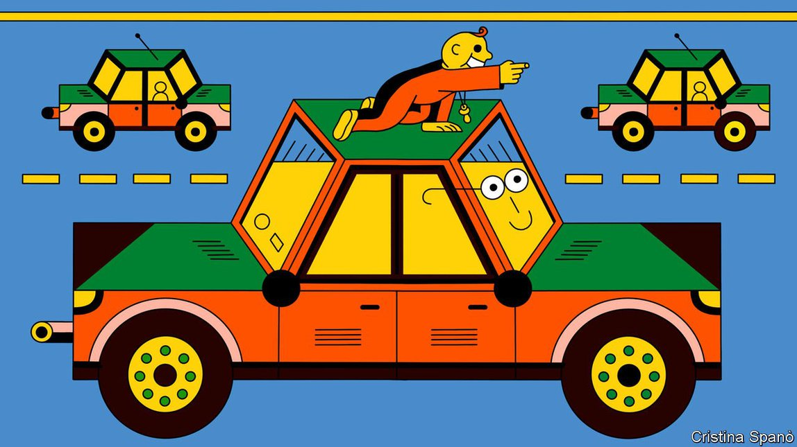

Text
2021-09-17T11:57:10+00:00
AI for vehicles
汽车人工智能
汽車人工智能
Is it smarter than a seven-month-old?
它比七个月大的孩子聪明吗？
它比七個月大的孩子聰明嗎？
How to improve the intelligence of self-driving cars
如何提高无人驾驶汽车的智能
如何提高無人駕駛汽車的智能
BY THE AGE of seven months, most children have learned that objects still exist even when they are out of sight. Put a toy under a blanket and a child that old will know it is still there, and that he can reach underneath the blanket to get it back. This understanding, of “object permanence”, is a normal developmental milestone, as well as a basic tenet of reality.
到七个月大时，大多数孩子都已经知道，物体即使在我们看不到它时仍然存在。把玩具放到毯子下面，这个年龄的孩子会知道它还在那儿，他可以伸手到毯子下面把它拿回来。这种对“客体永久性”的理解是孩子正常发育的一个里程碑，也是人感知现实世界的一个基本原则。
到七個月大時，大多數孩子都已經知道，物體即使在我們看不到它時仍然存在。把玩具放到毯子下面，這個年齡的孩子會知道它還在那兒，他可以伸手到毯子下面把它拿回來。這種對“客體永久性”的理解是孩子正常發育的一個里程碑，也是人感知現實世界的一個基本原則。
It is also something that self-driving cars do not have. And that is a problem. Autonomous vehicles are getting better, but they still don’t understand the world in the way that a human being does. For a self-driving car, a bicycle that is momentarily hidden by a passing van is a bicycle that has ceased to exist.
它也是无人驾驶汽车不具有的东西。而这是个问题。自主车辆日益先进，但它们仍然无法像一个人那样去理解世界。对一辆无人驾驶汽车来说，一辆被驶过的厢式车暂时遮住的自行车在那一刻就不复存在了。
它也是無人駕駛汽車不具有的東西。而這是個問題。自主車輛日益先進，但它們仍然無法像一個人那樣去理解世界。對一輛無人駕駛汽車來說，一輛被駛過的廂式車暫時遮住的自行車在那一刻就不復存在了。
This failing is basic to the now-widespread computing discipline that has arrogated to itself the slightly misleading moniker of artificial intelligence (AI). Current AI works by building up complex statistical models of the world, but it lacks a deeper understanding of reality. How to give AI at least some semblance of that understanding—the reasoning ability of a seven-month-old child, perhaps—is now a matter of active research.
这种缺陷是目前被广泛运用的一门计算学科的基本特征，这门学科不无误导地给自己取名人工智能（AI）。当前的AI通过对世界做复杂的统计建模来工作，但它缺乏对现实的更深入的理解。如何让AI多少拥有一些类似的深入理解——比如一个七个月大孩子的推理能力——是目前一个活跃的研究课题。
這種缺陷是目前被廣泛運用的一門計算學科的基本特徵，這門學科不無誤導地給自己取名人工智能（AI）。當前的AI通過對世界做複雜的統計建模來工作，但它缺乏對現實的更深入的理解。如何讓AI多少擁有一些類似的深入理解——比如一個七個月大孩子的推理能力——是目前一個活躍的研究課題。
Modern AI is based on the idea of machine learning. If an engineer wants a computer to recognise a stop sign, he does not try to write thousands of lines of code that describe every pattern of pixels which could possibly indicate such a sign. Instead, he writes a program that can learn for itself, and then shows that program thousands of pictures of stop signs. Over many repetitions, the program gradually works out what features all of these pictures have in common.
现代AI建基于机器学习的理念。如果一个工程师想让计算机识别出停车让行标志，他不会尝试编写成千上万行代码来描述可能意味着这类标志的每个像素模式。相反，他会编写一个能够自行学习的程序，然后向它展示成千上万张停车让行标志的图片。经过大量重复，程序逐渐找出了所有这些图片共有的特征。
現代AI建基於機器學習的理念。如果一個工程師想讓計算機識別出停車讓行標誌，他不會嘗試編寫成千上萬行代碼來描述可能意味着這類標誌的每個像素模式。相反，他會編寫一個能夠自行學習的程序，然後向它展示成千上萬張停車讓行標誌的圖片。經過大量重複，程序逐漸找出了所有這些圖片共有的特徵。
Similar techniques are used to train self-driving cars to operate in traffic. Cars thus learn how to obey lane markings, avoid other vehicles, hit the brakes at a red light and so on. But they do not understand many things a human driver takes for granted—that other cars on the road have engines and four wheels, or that they obey traffic regulations (usually) and the laws of physics (always). And they do not understand object permanence.
类似的方法被用于训练无人驾驶汽车在道路交通中行驶。汽车由此学会了如何遵守车道标记、躲避其他车辆、在红灯前踩刹车等等。但它们并不理解人类驾驶员视为理所当然的许多事，比如路上的其他车辆有发动机和四个轮子，又比如它们要遵守交通法规（通常情况下），也要遵循物理定律（永远如此）。它们也不理解客体永久性这回事。
類似的方法被用於訓練無人駕駛汽車在道路交通中行駛。汽車由此學會了如何遵守車道標記、躲避其他車輛、在紅燈前踩剎車等等。但它們並不理解人類駕駛員視為理所當然的許多事，比如路上的其他車輛有發動機和四個輪子，又比如它們要遵守交通法規（通常情況下），也要遵循物理定律（永遠如此）。它們也不理解客體永久性這回事。
In a recent paper in Artificial Intelligence, Mehul Bhatt of Orebro University, in Sweden, who is also the founder of a firm called CoDesign Lab which is developing his ideas commercially, describes a different approach. He and his colleagues took some existing AI programs which are used by self-driving cars and bolted onto them a piece of software called a symbolic-reasoning engine.
在最近一篇关于人工智能的论文中，瑞典厄勒布鲁大学（Orebro University）的梅胡尔特·巴特（Mehul Bhatt）描述了一种不同的方法。他也是CoDesign Lab的创始人，这家公司正在把他的创意商业化。他和同事把目前无人驾驶汽车使用的一些AI程序拿来，在其上加装了一种名为符号推理引擎的软件。
在最近一篇關於人工智能的論文中，瑞典厄勒布魯大學（Orebro University）的梅胡爾特·巴特（Mehul Bhatt）描述了一種不同的方法。他也是CoDesign Lab的創始人，這家公司正在把他的創意商業化。他和同事把目前無人駕駛汽車使用的一些AI程序拿來，在其上加裝了一種名為符號推理引擎的軟件。
The heart has its reasons...
心灵自有逻辑
心靈自有邏輯
Instead of approaching the world probabilistically, as machine learning does, this software was programmed to apply basic physical concepts to the output of the programs that process signals from an autonomous vehicle’s sensors. This modified output was then fed to the software which drives the vehicle. The concepts involved included the ideas that discrete objects continue to exist over time, that they have spatial relationships with one another—such as “in-front-of” and “behind”—and that they can be fully or partly visible, or completely hidden by another object.
这种软件不像机器学习那样以概率的方式探究世界，而是通过编程，对那些处理无人车传感器信号的程序的输出应用基本的物理概念，再把修改后的输出传输给驱动车辆的软件。其中涉及的物理概念包括离散对象随时间推移继续存在、它们彼此之间具有空间关系——比如“在前面”和“在后面”，以及它们可以完全或部分可见，或被另一个物体完全遮蔽。
這種軟件不像機器學習那樣以概率的方式探究世界，而是通過編程，對那些處理無人車傳感器信號的程序的輸出應用基本的物理概念，再把修改後的輸出傳輸給驅動車輛的軟件。其中涉及的物理概念包括離散對象隨時間推移繼續存在、它們彼此之間具有空間關係——比如“在前面”和“在後面”，以及它們可以完全或部分可見，或被另一個物體完全遮蔽。
And it worked. In tests, if one car momentarily blocked the sight of another, the reasoning-enhanced software could keep track of the blocked car, predict where and when it would reappear, and take steps to avoid it if necessary. The improvement was not huge. On standard tests Dr Bhatt’s system scored about 5% better than existing software. But it proved the principle. And it also yielded something else. For, unlike a machine-learning algorithm, a reasoning engine can tell you the reason why it did what it did.
它奏效了。在测试中，如果一辆车暂时挡住了另一辆车，这种推理增强软件可以追踪被挡住的车，预测它何时何地再次出现，并在必要时采取措施躲避它。这种改进说不上巨大。在标准测试中，巴特的系统比现有软件得分高5%左右。但它证明了原理。它还带来了其他好处。这是因为与机器学习算法不同，推理引擎可以告诉你它之所以做出某种行为的原因。
它奏效了。在測試中，如果一輛車暫時擋住了另一輛車，這種推理增強軟件可以追蹤被擋住的車，預測它何時何地再次出現，並在必要時採取措施躲避它。這種改進說不上巨大。在標準測試中，巴特的系統比現有軟件得分高5%左右。但它證明了原理。它還帶來了其他好處。這是因為與機器學習算法不同，推理引擎可以告訴你它之所以做出某種行為的原因。
You could, for instance, ask a car fitted with a reasoning engine why it had hit the brakes, and it would be able to tell you that it thought a bicycle hidden by a van was about to enter the intersection ahead. A machine-learning program cannot do that. Besides helping improve program design, such information will, Dr Bhatt reckons, help regulators and insurance companies. It may thus speed up public acceptance of autonomous vehicles.
比如，你可以问一辆安装了推理引擎的车它为什么刹车，它会告诉你它认为一辆被厢式车遮住的自行车即将进入前方的十字路口。机器学习程序无法做到这一点。巴特认为，除了有助于改进程序设计外，这类信息能帮到监管部门和保险公司。因此它可能会加快公众接受无人驾驶汽车的过程。
比如，你可以問一輛安裝了推理引擎的車它為什麼剎車，它會告訴你它認為一輛被廂式車遮住的自行車即將進入前方的十字路口。機器學習程序無法做到這一點。巴特認為，除了有助於改進程序設計外，這類信息能幫到監管部門和保險公司。因此它可能會加快公眾接受無人駕駛汽車的過程。
Dr Bhatt’s work is part of a long-standing debate in the field of artificial intelligence. Early AI researchers, working in the 1950s, chalked up some successes using this sort of preprogrammed reasoning. But, beginning in the 1990s, machine learning improved dramatically, thanks to better programming techniques combined with more powerful computers and the availability of more data. Today almost all AI is based on it.
巴特的研究涉及到AI领域久已有之的争论。早期的AI研究人员在1950年代使用这种预编程推理，取得了一些成功。但是，自1990年代开始，改进的编程技术与更强大的计算机以及更多可获得的数据相结合，使得机器学习突飞猛进。今天几乎所有的AI都是基于这种方法。
巴特的研究涉及到AI領域久已有之的爭論。早期的AI研究人員在1950年代使用這種預編程推理，取得了一些成功。但是，自1990年代開始，改進的編程技術與更強大的計算機以及更多可獲得的數據相結合，使得機器學習突飛猛進。今天幾乎所有的AI都是基於這種方法。
Dr Bhatt is not, though, alone in his scepticism. Gary Marcus, who studies psychology and neural science at New York University and is also the boss of an AI and robotics company called Robust.AI, agrees. To support his point of view, Dr Marcus cites a much-publicised result, albeit from eight years ago. This was when engineers at DeepMind (then an independent company, now part of Google) wrote a program that could learn, without being given any hints about the rules, how to play Breakout, a video game which involves hitting a moving virtual ball with a virtual paddle.
但巴特不是唯一一个质疑这种方法的人。加里·马库斯（Gary Marcus）也认同巴特的观点。他在纽约大学研究心理学和神经科学，也是名为Robust.AI的人工智能和机器人公司的老板。马库斯博士用八年前一个被大量报道的研究结果来佐证自己的理念。那时，DeepMind（当时还是一家独立公司，现在是谷歌的一部分）的工程师编写了一个程序，它可以在没有拿到任何规则提示的情况下学习怎么玩视频游戏Breakout：用一块虚拟的板击打移动中的虚拟的球。
但巴特不是唯一一個質疑這種方法的人。加里·馬庫斯（Gary Marcus）也認同巴特的觀點。他在紐約大學研究心理學和神經科學，也是名為Robust.AI的人工智能和機器人公司的老闆。馬庫斯博士用八年前一個被大量報道的研究結果來佐證自己的理念。那時，DeepMind（當時還是一家獨立公司，現在是谷歌的一部分）的工程師編寫了一個程序，它可以在沒有拿到任何規則提示的情況下學習怎麼玩視頻遊戲Breakout：用一塊虛擬的板擊打移動中的虛擬的球。
DeepMind’s program was a great player. But when another group of researchers tinkered with Breakout’s code—shifting the location of the paddles by just a few pixels—its abilities plummeted. It was not able to generalise what it had learned from a specific situation even to a situation that was only slightly different.
DeepMind的程序是个杰出的玩家。但当另一组研究人员修改了Breakout的代码——将板的位置仅仅移动了几个像素——它的能力就直线下降。它无法将自己从特定情形中学到的东西推广到即便只是略有不同的情形中。
DeepMind的程序是個傑出的玩家。但當另一組研究人員修改了Breakout的代碼——將板的位置僅僅移動了幾個像素——它的能力就直線下降。它無法將自己從特定情形中學到的東西推廣到即便只是略有不同的情形中。
Back to the future
回到未来
回到未來
For Dr Marcus, this example highlights the fragility of machine-learning. But others think it is symbolic reasoning which is brittle, and that machine learning still has a lot of mileage left in it. Among them is Jeff Hawke, vice-president of technology at Wayve, a self-driving-car firm in London. Wayve’s approach is to train the software elements running a car’s various components simultaneously, rather than separately. In demonstrations, Wayve’s cars make good decisions while navigating narrow, heavily trafficked London streets—a task that challenges many humans.
在马库斯看来，这个例子凸显了机器学习的脆弱性。但其他人认为符号推理才是脆弱的，而机器学习还有很大的进步空间。伦敦的无人驾驶汽车公司Wayve的技术副总裁杰夫·霍克（Jeff Hawke）就属于这一派。Wayve的方法是对控制汽车各种部件的软件元素同时开展训练，而不是分别训练。在演示中，Wayve的汽车在狭窄、拥堵的伦敦街道上行驶时一路都做出了明智的决策——这对于人类驾驶员而言往往也颇具挑战。
在馬庫斯看來，這個例子凸顯了機器學習的脆弱性。但其他人認為符號推理才是脆弱的，而機器學習還有很大的進步空間。倫敦的無人駕駛汽車公司Wayve的技術副總裁傑夫·霍克（Jeff Hawke）就屬於這一派。Wayve的方法是對控制汽車各種部件的軟件元素同時開展訓練，而不是分別訓練。在演示中，Wayve的汽車在狹窄、擁堵的倫敦街道上行駛時一路都做出了明智的決策——這對於人類駕駛員而言往往也頗具挑戰。
As Dr Hawke puts it, “the complexity of most real-world tasks is greater than is possible to solve with handcrafted rules, and it’s well known that expert systems built with rules tend to struggle with complexity. This is true regardless of how well thought out or structured the formal logic is.” Such a system might, for instance, craft a rule that a car should stop at a red light. But lights are designed differently in different countries, and some are intended for pedestrians rather than cars. There are also situations in which you might need to jump a red light, such as to make way for a fire engine. “The beauty of machine learning”, Dr Hawke says, “is that all these factors and concepts can be automatically uncovered and learned from data. And with more data, it continues to learn and become more intelligent.”
霍克是这样说的：“大多数现实世界任务的复杂性超出了手工规则能解决的范畴，而且众所周知，用规则构建的专家系统往往难以应付复杂性。形式逻辑不管有多么深思熟虑或结构完备也一样。”例如，这样的系统可能会制订汽车应在红灯前停下的规则。但不同国家的交通灯设计不同，而有些灯限制的是行人而非汽车。在某些情况下你可能需要闯红灯，比如给消防车让路。“机器学习的美妙之处，”霍克说，“是所有这些因素和概念都可以从数据中自动发现和学习。有了更多数据，它会继续学习并变得更加聪明。”
霍克是這樣說的：“大多數現實世界任務的複雜性超出了手工規則能解決的範疇，而且眾所周知，用規則構建的專家系統往往難以應付複雜性。形式邏輯不管有多麼深思熟慮或結構完備也一樣。”例如，這樣的系統可能會制訂汽車應在紅燈前停下的規則。但不同國家的交通燈設計不同，而有些燈限制的是行人而非汽車。在某些情況下你可能需要闖紅燈，比如給消防車讓路。“機器學習的美妙之處，”霍克說，“是所有這些因素和概念都可以從數據中自動發現和學習。有了更多數據，它會繼續學習並變得更加聰明。”
Nicholas Rhinehart, who studies robotics and AI at the University of California, Berkeley, also backs machine learning. He says Dr Bhatt’s approach does indeed show you can combine the two approaches. But he is not sure it is necessary. In his work, and also that of others, machine-learning systems alone can already predict probabilities a few seconds into the future—such as whether another car is likely to give way or not—and make contingency plans based on those predictions.
加州大学伯克利分校研究机器人技术和人工智能的尼古拉斯·莱因哈特（Nicholas Rhinehart）也支持机器学习。他说巴特的方法确实表明可以将两种方法结合起来，但他不确定是否真有此必要。在他的以及其他人的研究中，仅靠机器学习系统就可以预测未来几秒后的事件概率——例如另一辆车是否会让路——并根据这些预测制定应急计划。
加州大學伯克利分校研究機器人技術和人工智能的尼古拉斯·萊因哈特（Nicholas Rhinehart）也支持機器學習。他說巴特的方法確實表明可以將兩種方法結合起來，但他不確定是否真有此必要。在他的以及其他人的研究中，僅靠機器學習系統就可以預測未來幾秒後的事件概率——例如另一輛車是否會讓路——並根據這些預測制定應急計劃。
Dr Bhatt responds that you can train a car with data accumulated over millions of kilometres of driving, and still not be sure you have covered all the necessary situations. In many cases, it might be simpler and more effective to program some of the rules in from the start.
巴特回应说，你确实可以用数百万公里的行驶里程积累的数据来训练一辆车，但仍不能确定是否已经涵盖了所有必要情形。在许多情况下，从一开始就把一些规则编写进去可能更简单，也更有效。
巴特回應說，你確實可以用數百萬公里的行駛里程積累的數據來訓練一輛車，但仍不能確定是否已經涵蓋了所有必要情形。在許多情況下，從一開始就把一些規則編寫進去可能更簡單，也更有效。
For champions of both strategies, the question goes beyond self-driving cars to the future of AI itself. “I don't think we're taking the right approach right now,” Dr Marcus says. “[Machine learning] has proven useful for some things like speech recognition, but it's not actually the answer to AI. We haven't really solved the intelligence problem.” One way or another, then, it seems seven-month-olds still have a lot to teach machines. ■
对于两种策略的拥护者来说，问题都不止于无人驾驶汽车，而关乎AI自身的未来。“我认为我们现在采用的方法不对，”马库斯说，“[机器学习]已被证明对语音识别等一些事情管用，但它实际上并不是人工智能的解决方案。我们还没有真正解决智能问题。”不论孰是孰非，看起来，七个月大的孩子还有很多东西值得机器学习的。
對於兩種策略的擁護者來說，問題都不止於無人駕駛汽車，而關乎AI自身的未來。“我認為我們現在採用的方法不對，”馬庫斯說，“[機器學習]已被證明對語音識別等一些事情管用，但它實際上並不是人工智能的解決方案。我們還沒有真正解決智能問題。”不論孰是孰非，看起來，七個月大的孩子還有很多東西值得機器學習的。